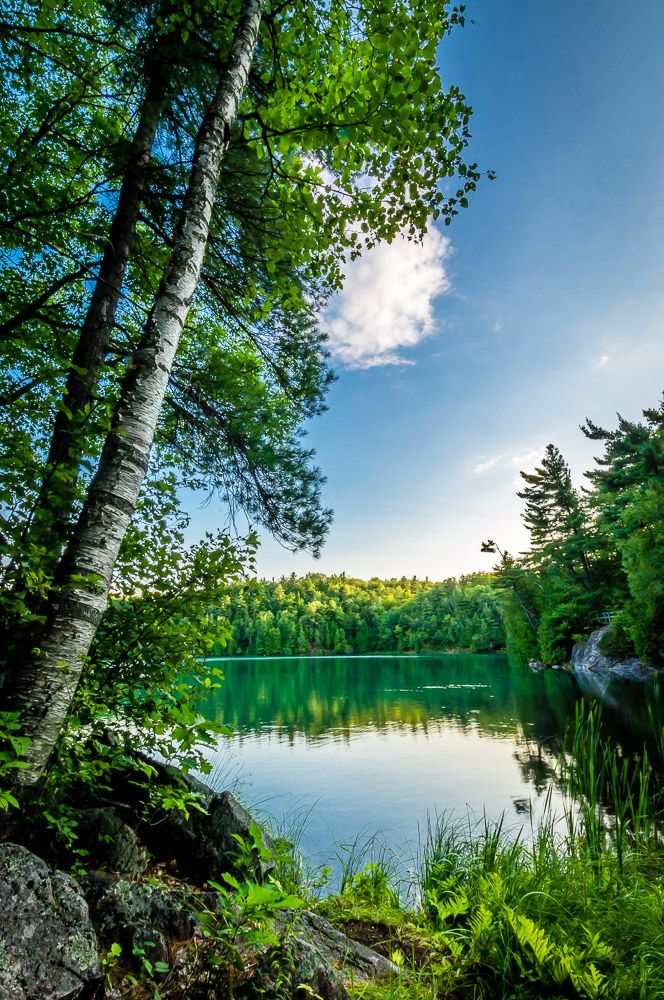
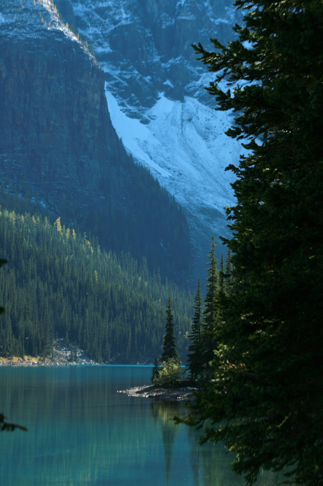
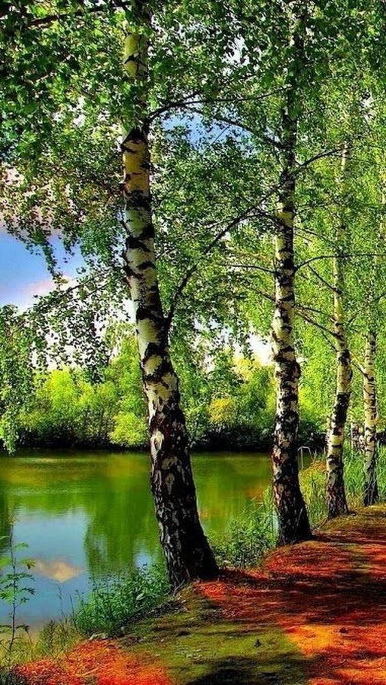

Новости
События
Россия
Последние Статьи

Доклад «О состоянии и использовании водных ресурсов Российской Федерации в 2020 году». – М.: Росводресурсы, НИА-Природа, 2022. – 510 с.

Государственный доклад «О состоянии и использовании водных ресурсов Российской Федерации в 2018 году». – М.: НИА-Природа, 2019. – 290 с.

Государственный доклад «О состоянии и об охране окружающей среды Российской Федерации в 2016 году». – М.: Минприроды России; НИА-Природа. – 2017. – 760 с.
Последние новости
О нас
Лабораторная работа 4
Сибряев Егор Витальевич
6404
2024